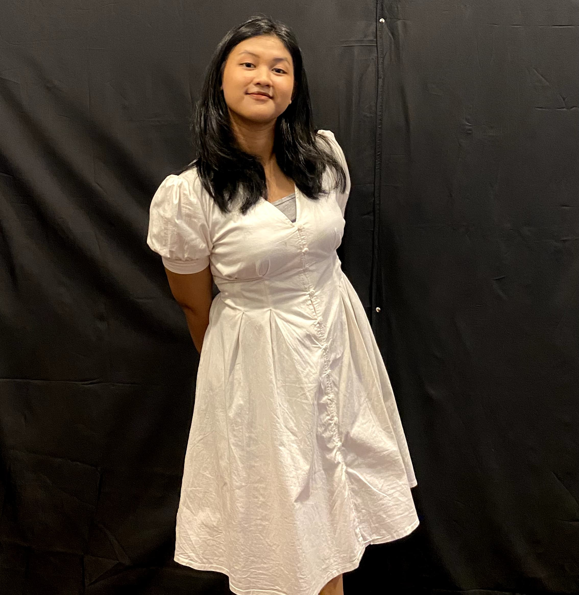
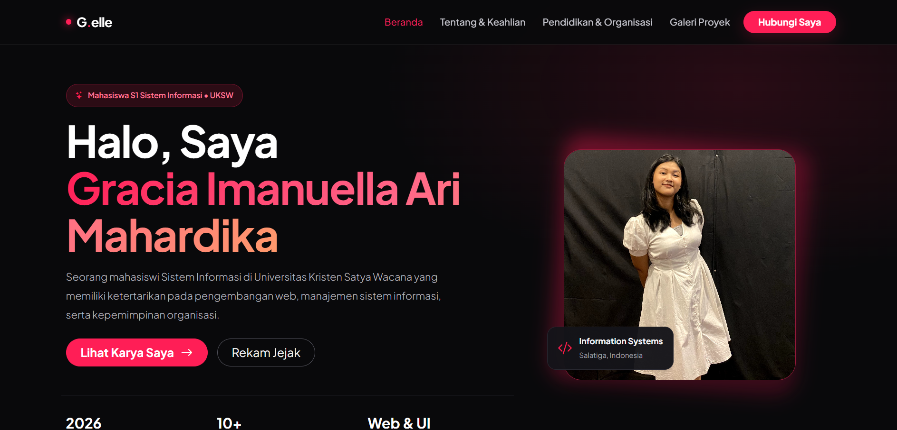
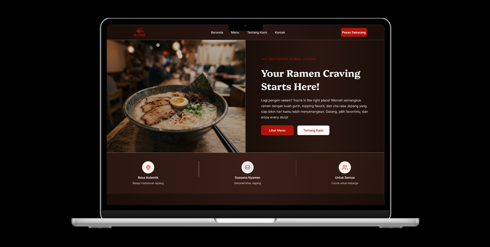
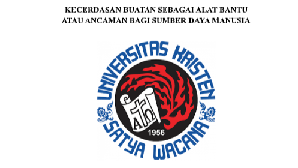

Halo, Saya
Gracia Imanuella Ari Mahardika
Seorang mahasiswi Sistem Informasi di Universitas Kristen Satya Wacana yang memiliki ketertarikan pada pengembangan web, manajemen sistem informasi, serta kepemimpinan organisasi.
2026
Angkatan SI UKSW10+
Peran OrganisasiWeb & UI
Fokus Eksplorasi
Menjembatani Teknologi, Kreativitas, dan Kepemimpinan
Saya Gracia Imanuella Ari Mahardika, mahasiswi aktif Program Studi S1 Sistem Informasi, Fakultas Teknologi Informasi, Universitas Kristen Satya Wacana (UKSW) angkatan 2026.
Sejak masa sekolah menengah hingga perguruan tinggi, saya aktif mengasah kemampuan komunikasi publik, manajemen acara, dan kerja sama tim melalui berbagai kepanitiaan serta organisasi kepemudaan. Kini di bidang teknologi informasi, saya berfokus mempelajari bagaimana merancang antarmuka web yang responsif dan sistem informasi yang efektif untuk kebutuhan pengguna.
NIM: 682026054
Fokus Akademik Saat Ini
Pengantar Teknologi Informasi, Algoritma & Pemrograman Dasar, serta Pengembangan Web (HTML5, CSS3, Bootstrap 5, JavaScript).
Teknologi & Tools
Kepemimpinan & Profesional
Perjalanan Pendidikan & Kepemimpinan
Rekam jejak pendidikan formal dan kontribusi aktif saya dalam berbagai organisasi serta kepanitiaan dari tahun ke tahun.
Riwayat Pendidikan
Universitas Kristen Satya Wacana (UKSW)
S1 - Sistem Informasi, Fakultas Teknologi Informasi
SMAN 1 Cibinong
Pendidikan Menengah Atas
SMPN 1 Citeureup
Pendidikan Menengah Pertama
SDN Gunungputri 05
Pendidikan Sekolah Dasar
Pengalaman Organisasi & Kepanitiaan
Wakil Ketua
Youth Epic Alliance
Anggota Divisi Public Relations
IONE 2.0
Koordinator Divisi Ibadah
Youth Epic Alliance
Koordinator Divisi Keamanan
Rohkris
Ketua Natal
Youth Epic Alliance
Anggota Divisi Acara Paskah
Kepanitiaan Paskah
Hobi & Minat Saya
Berbagai hal yang saya sukai di luar aktivitas akademik, mulai dari mengeksplorasi pengalaman baru hingga menikmati kreativitas dan hiburan.
Culinary Exploration
Menjelajahi beragam cita rasa, mencoba berbagai hidangan, dan menemukan pengalaman kuliner yang unik.
Travel & Exploration
Menjelajahi destinasi baru, mengunjungi tempat-tempat menarik, dan menciptakan pengalaman yang berkesan.
Membaca Novel
Menikmati berbagai cerita dan memperluas imajinasi melalui karya sastra.
Baking & Memasak
Mengeksplorasi resep baru dan menyalurkan kreativitas melalui kegiatan memasak serta membuat kue.
Mendengarkan Musik
Menikmati beragam genre musik dan menemukan inspirasi melalui alunan serta lirik lagu.
Menonton Film
Menikmati berbagai genre film dan mengapresiasi seni bercerita melalui visual.
Menonton Konser
Menikmati pertunjukan musik secara langsung dan merasakan atmosfer serta energi setiap penampilan.
Exploring New Experiences
Senang mencoba hal-hal baru, mengeksplorasi berbagai aktivitas, dan memperoleh pengalaman yang berbeda.
Proyek & Eksplorasi Saya
Beberapa karya dan eksplorasi yang menggambarkan proses belajar, kreativitas, serta ketertarikan saya di bidang teknologi.

Personal Digital Portfolio Website
Pengembangan website portofolio pribadi yang responsif sebagai media untuk memperkenalkan identitas, perjalanan akademik, keterampilan, dan hasil karya.

UI/UX Design & Interactive Prototyping
Eksplorasi desain antarmuka dan pengalaman pengguna melalui pembuatan wireframe serta prototype interaktif dengan memperhatikan kebutuhan pengguna.

Academic Research & Project Documentation
Dokumentasi kegiatan akademik dan penyusunan proyek melalui proses pengumpulan informasi, pengolahan data, serta penyajian hasil secara sistematis.